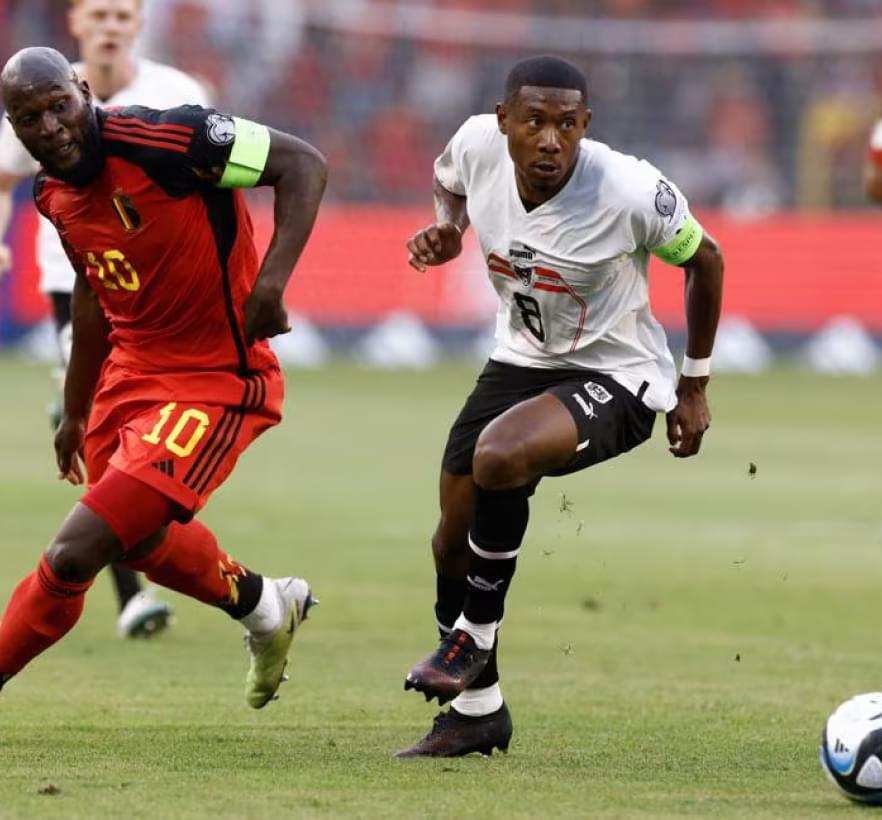
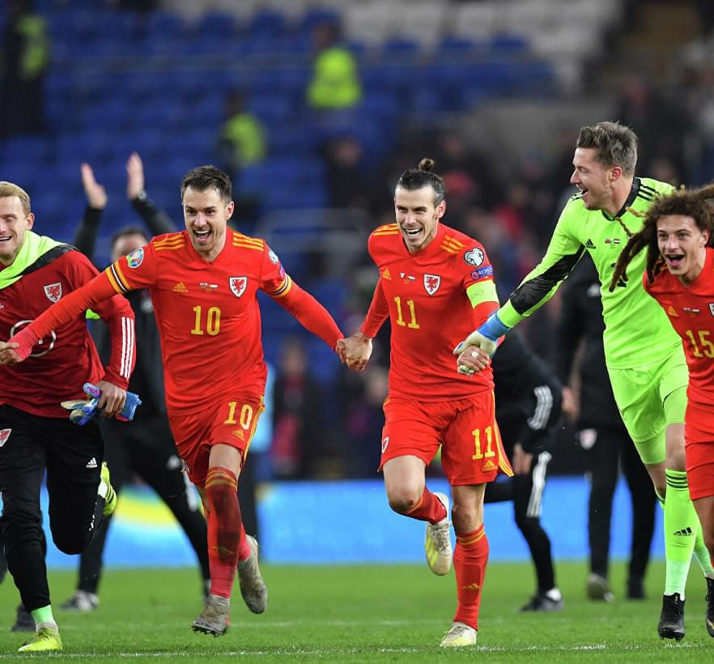

Das Spiel zwischen der belgischen und der estnischen Nationalmannschaft war eines der allerersten, heißesten und besten Spiele, die man auf dem Fußballplatz sehen konnte. Das Aufeinandertreffen dieser beiden Mannschaften war so aufregend, dass Fußballfans den Blick nicht vom Spiel lassen konnten.
Die belgische Nationalmannschaft, die für ihr hochprofessionelles Spiel bekannt ist, betrat das Spielfeld mit Feuer in den Augen. Ihre Angriffe waren stark und schnell und sie versuchten, mit jedem Schlag ein Tor zu erzielen und ihren Fans die Freude über den Sieg zu bereiten. Ihr ausgezeichneter Ballbesitz, ihre Passgenauigkeit und ihr gutes Teamwork waren erstklassig und verschafften ihnen einen Vorteil auf dem Platz.

Österreich
0:1
Belgien
3 Runde
17 Juni
Das Spiel zwischen den Nationalmannschaften Belgiens und Österreichs war eines der allerersten, heißesten und besten Spiele, die auf dem Fußballplatz zu sehen waren. Die Teams betraten das Feld mit maximaler Motivation und Entschlossenheit, um ihr unübertroffenes Spiel zu zeigen.
Die belgische Nationalmannschaft, die in der Weltrangliste einen hohen Platz einnimmt, hat von Beginn des Spiels an ihre Einzigartigkeit und Überlegenheit unter Beweis gestellt. Sie griffen mit großer Intensität an, wollten ein Tor erzielen und den Ton für das Spiel angeben. Ihr Mannschaftsspiel und die gute Organisation auf dem Spielfeld waren einfach die Besten, mit jeder Ballbewegung erspielten sie sich gefährliche Chancen auf das gegnerische Tor.

Deutschland
2:3
Belgien
28 Juni
Das Spiel zwischen den Nationalmannschaften Belgiens und Deutschlands war eines der allerersten, heißesten und besten Spiele, die auf dem Fußballplatz zu sehen waren. Beide Mannschaften sind stark und berühmt in der Welt des Fußballs, und dieses Spiel war eine echte Konfrontation.
Von Beginn des Spiels an betraten beide Mannschaften mit großer Begeisterung und Entschlossenheit das Spielfeld, um die Initiative zu ergreifen. Die belgische Nationalmannschaft zeigte von den ersten Spielminuten an ihre Angriffskraft und Technik. Sie gingen aggressiv vor und führten ihre Angriffe mit großer Intensität aus, mit dem Ziel, ein Tor zu erzielen. Die belgischen Spieler zeigten ihr einzigartiges Talent und ihre gute Teamarbeit, um gegen die starke deutsche Mannschaft anzutreten.